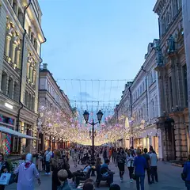
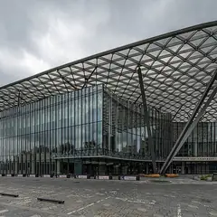
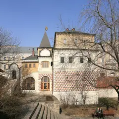

У метро · ЦАО
Куда сходить у метро «Китай-город»
Для 36 мест из нашего каталога ближайшая станция — «Китай-город» (ЦАО): 10 ресторанов и кафе, 9 баров, 5 развлечений и 4 кофейни. Например, Парк «Зарядье», «KGallery Bookcafe» и «Китай-город». Недорогих, примерно до 1 500 ₽ на человека, — 13. 18 готовых планов проходят через эту станцию — например, «Варварка и Магритт», с маршрутом пешком между точками.
- 36 мест
- 18 планов
Места у метро «Китай-город» 35
ул. Варварка, 6
Парящий мост над Москвой-рекой и вид на Кремль. Сам парк открыт круглосуточно.
Подробнее и маршрут: Парк «Зарядье»Позвать сюда: Парк «Зарядье»
Фото: Alina Vozna, CC BY-SA 4.0 · Wikimedia Commons
Яузская ул., 1/15, стр. 1
Петербургская галерея открыла в усадьбе Филипповых книжный об искусстве, кино и архитектуре, кабинет графики и кофейню. Есть каталоги зарубежных музеев и винил.
Подробнее и маршрут: KGallery BookcafeПозвать сюда: KGallery Bookcafe
Фото: Никонико962, CC BY-SA 4.0 · Wikimedia Commons

Никольская ул. и Варварка
Самый старый квартал за Кремлём: Никольская, Варварка, Ильинка и палаты XVII века.
Подробнее и маршрут: Китай-городПозвать сюда: Китай-город
Фото: Don-vip, CC BY-SA 4.0 · Wikimedia Commons

ул. Варварка, 6, стр. 4
Один из лучших залов страны по акустике, прямо в парке «Зарядье».
Подробнее и маршрут: Концертный зал «Зарядье»Позвать сюда: Концертный зал «Зарядье»
Фото: A.Savin, Free Art License · Wikimedia Commons

ул. Варварка, 10
Терем XVI–XVII веков на Варварке: как жили московские бояре.
Подробнее и маршрут: Палаты бояр РомановыхПозвать сюда: Палаты бояр Романовых
Фото: Ludvig14, CC BY-SA 3.0 · Wikimedia Commons
Большой Трёхсвятительский пер., 2/1, стр. 8
Четыре стола для пула и один для русского, бар. От 1 250 ₽ в час, 17:00–1:00.
ул. Маросейка, 15
Новое
Караоке-клуб в подвальчике на Маросейке у Китай-города: общий зал, VIP-комната и пакет для девичника. Работает до 5–6 утра.
Подробнее и маршрут: Белая стрекозаПозвать сюда: Белая стрекоза
ул. Маросейка, 4/2, стр. 1
Фудхолл у Китай-города с десятками корнеров, а наверху — бильярд.
Подробнее и маршрут: Центральный рынок на МаросейкеПозвать сюда: Центральный рынок на Маросейке
ул. Варварка, 6, стр. 7
Ресторан в «Зарядье» в духе 60-х: кухня 15 республик и вид на Кремль.
Покровка, 7/9-11, корп. 1
Бар крафтового пива на Покровке.
Яузская ул., 1/15
Петербургское кабаре в усадьбе Филипповых: чтения под баян (у Пушкина — про вампиров и дев в беде), спектакли и вечера «интеллигентного разгула».
Подколокольный пер., 11/11, стр. 1
Книжный и кафе в жилых палатах XVII века на Хитровке, кабинет графики.
Яузский бул.
Проект Вани Дмитриенко в особняке на Яузском бульваре с фотогеничным балкончиком.
Большой Спасоглинищевский пер., 9/1, стр. 10
Настойки у стойки, без привычных столиков — живо и недорого. У Китай-города.
Подробнее и маршрут: Рюмочная мечтыПозвать сюда: Рюмочная мечты
Большой Черкасский пер., 15-17, стр. 1
Фламандская кухня, мидии и 200 сортов пива, 20 кранов. В пт до 03.
Подробнее и маршрут: Brasserie LambicПозвать сюда: Brasserie Lambic
Большой Трёхсвятительский пер., 2/1, стр. 1
Коктейльный бар на Хитровке с сезонной кухней: фри с трюфелем, хумус в азиатской версии.
Лубянский пр., 15, стр. 2
Новое
Караоке с многолетней историей у Китай-города: зал со сценой, бэк-вокалисты и сильный звук, отдельный бар и VIP-зона. Депозит от 5000 ₽ с гостя, 18+, с 20:00 до 6 утра.
ул. Варварка, 14
Ресторан в бывшей гостинице «Россия» с панорамой «Зарядья», вдохновлённый Рене Магриттом.
ул. Солянка, 1/2, стр. 1
Двухэтажная пекарня в копенгагенском стиле. 8–00.
Большой Трёхсвятительский пер., 2/1, стр. 1
Кафе в шоуруме 60 местных дизайнеров в особняке Морозовых: вафли-Эйфелевы башни. 11–21.
Подкопаевский пер., 4А
Ужин-спектакль с 360-градусными проекциями: семь подач — семь сцен.
ул. Маросейка, 6-8, стр. 1
Бар с безумными стритфуд-сочетаниями во дворе на Маросейке.
Яузский бул., 14/8
Бистро на Яузском бульваре с большими завтраками.
ул. Солянка, 1/2, стр. 2
Небольшой винный ресторан у Китай-города для тихих вечеров и свиданий.
Солянский туп., 1/4
Крохотное кафе на пять столиков, которое 20 лет кормит сэндвичами и пирогами.
Подробнее и маршрут: Люди как людиПозвать сюда: Люди как люди
ул. Покровка, 8
Кофейня-коворкинг из Уфы со своей обжаркой. 7–23.
Подробнее и маршрут: Мама варит кофеПозвать сюда: Мама варит кофе
Лубянский пр., 25, стр. 2
Бар с винтажным тёплым интерьером, фирменными настойками и диджей-сетами.
ул. Варварка, 6, стр. 3
Самый демократичный ресторан парка «Зарядье» с видом на Москву-реку.
Подробнее и маршрут: Ресторан «Зарядье»Позвать сюда: Ресторан «Зарядье»
ул. Солянка, 1/2, стр. 1
Тайская кухня без компромиссов и веранда у Китай-города.
Покровский бул., 16/10, стр. 1
За три часа с художником пишете картину на настоящем холсте — даже если никогда не рисовали.
Подробнее и маршрут: Draw Up StudioПозвать сюда: Draw Up Studio
ул. Маросейка, 8
Минималистичная сэндвичная: начинки на тонкой фокаччо.
Девяткин пер., 7
Городское кафе у Китай-города: своя пекарня, неаполитанская пицца и щедрая винная карта.
Лубянский пр., 25/12
Стрельба из боевого оружия с инструктором в центре Москвы.
Большой Трёхсвятительский пер., 2/1, стр. 8
Бар у Хитровки с музыкальной программой на крыше.
Яузский бул., 12
Лофт с люстрами и винтажной мебелью, джаз и DJ-сеты по вечерам. До полуночи.


Готовые планы 12 из 18
- Палаты бояр Романовых · Музей · м. Китай-город
- 3 минуты пешкомMagritte · Ресторан Аркадия Новикова
Терем XVI–XVII веков на Варварке, где видно, как жили московские бояре, а потом ужин в Magritte Аркадия Новикова с панорамой «Зарядья».
Открыть план: Варварка и МагриттПозвать сюда: Варварка и Магритт
Фото: Ludvig14, CC BY-SA 3.0 · Wikimedia Commons
- Парк «Зарядье» · Парк · м. Китай-город
- 9 минут пешкомBrasserie Lambic · Пивной ресторан
Прогулка по Парящему мосту, потом мидии и двести сортов пива в брассери за десять минут.
Открыть план: Зарядье и бельгийское пивоПозвать сюда: Зарядье и бельгийское пиво
Фото: Alina Vozna, CC BY-SA 4.0 · Wikimedia Commons
- KGallery Bookcafe · Книжный и кофейня в усадьбе · м. Китай-город
- 1 минута пешкомКабаре «Шум» · Кабаре
Кофе и альбомы по искусству в KGallery, а потом там же, в усадьбе Филипповых, — петербургское кабаре «Шум» с чтениями под баян и спектаклями.
Открыть план: Кабаре и книжный в усадьбеПозвать сюда: Кабаре и книжный в усадьбе
Фото: Никонико962, CC BY-SA 4.0 · Wikimedia Commons
- KGallery Bookcafe · Книжный и кофейня в усадьбе · м. Китай-город
- 9 минут пешкомOdmo Maison · Кафе и шоурум
Листаете книги об искусстве, кино и архитектуре в KGallery в усадьбе Филипповых, а потом шоурум 60 местных дизайнеров в особняке Морозовых и вафли-Эйфелевы башни.
Открыть план: Книжный в усадьбе и шоурум дизайнеровПозвать сюда: Книжный в усадьбе и шоурум дизайнеров
Фото: Никонико962, CC BY-SA 4.0 · Wikimedia Commons
- Красная площадь · Площадь · м. Площадь Революции
- 9 минут пешкомВосход · Ресторан с видом на Кремль
Вечерняя Красная площадь и ужин с видом на Кремль в «Восходе» в «Зарядье».
Открыть план: Красная площадь и «Восход»Позвать сюда: Красная площадь и «Восход»
Фото: mos.ru, CC BY 4.0 · Wikimedia Commons
- Парк «Зарядье» · Парк · м. Китай-город
- 2 минуты пешкомКонцертный зал «Зарядье» · Концертный зал
Вид на Кремль с Парящего моста, а потом живая музыка в одном из лучших по акустике залов страны — прямо в том же парке.
Открыть план: Парящий мост и концерт в ЗарядьеПозвать сюда: Парящий мост и концерт в Зарядье
Фото: Alina Vozna, CC BY-SA 4.0 · Wikimedia Commons
- Парк «Зарядье» · Парк · м. Китай-город
- 20 минут пешкомИллюзион · Кинотеатр
Вид на Кремль с моста над рекой, а через 20 минут прогулки — классика на большом экране в высотке.
Открыть план: Парящий мост и старое киноПозвать сюда: Парящий мост и старое кино
Фото: Alina Vozna, CC BY-SA 4.0 · Wikimedia Commons
- Китай-город · Исторический квартал · м. Китай-город
- 3 минуты пешкомЦентральный рынок на Маросейке · Фудхолл
Прогулка по Китай-городу и фудхолл на Маросейке с бильярдом на третьем этаже.
Открыть план: Фудхолл и бильярдПозвать сюда: Фудхолл и бильярд
Фото: Don-vip, CC BY-SA 4.0 · Wikimedia Commons
- Центральный рынок на Маросейке · Фудхолл · м. Китай-город
- 3 минуты пешкомБелая стрекоза · Караоке-клуб
Перекусить в Центральном рынке на Маросейке, где каждая выбирает своё, а потом в подвальчик «Белая стрекоза» с пакетом для девичника — поют до 5–6 утра.
Открыть план: Фудхолл и караоке в подвальчикеПозвать сюда: Фудхолл и караоке в подвальчике
- Draw Up Studio · Арт-вечеринка · м. Китай-город
- 10 минут пешкомNouge · Винное бистро
Пишете картины, а потом идёте пить вино в старинную усадьбу.
Открыть план: Арт-вечеринка и бистроПозвать сюда: Арт-вечеринка и бистро
- Neighborhood · Бар с бильярдом · м. Лубянка
- 7 минут пешкомUnderdog · Стритфуд-бар
- 5 минут пешкомРюмочная мечты · Рюмочная
Разминка за бильярдом с пивом в Neighborhood на Мясницкой, потом безумные стритфуд-сочетания в Underdog на Маросейке и финал с настойками у стойки в «Рюмочной мечты» — всё в пешей доступности.
Открыть план: Барный круг по Китай-городуПозвать сюда: Барный круг по Китай-городу
- Тессинский мост · Пешеходный мост через Яузу · м. Таганская
- 7 минут пешкомОрбита · Бар-ресторан в особняке
Арочный мостик через Яузу с видом на высотку на Котельнической, потом ужин в особняке «Орбиты» на Яузском бульваре.
Открыть план: Закат на Тессинском мостуПозвать сюда: Закат на Тессинском мосту

Компьютерные клубы 1
Серебрянический пер., 12, стр. 1 (1 этаж)
Круглосуточно
Киберотель без общего зала: приватные комнаты на одного, пару или компанию, около 63 ПК (до RTX 5080, мониторы до 360 Гц), ресторан, бар и номера на ночь. Круглосуточно.
Подробнее и маршрут: Avulus Cyber SpaceПозвать сюда: Avulus Cyber Space
Как позвать
- Выбери план, место или событие — в карточке адрес, цены и маршрут в Яндекс Картах.
- Нажми «Позвать сюда» — соберётся приглашение-игра для свидания или голосование для компании.
- Отправь ссылку в любой мессенджер: тебе ответят, а компания отметит, куда и когда может. Бесплатно и без регистрации.